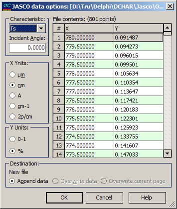

JASCO options
JASCO spectrometer data can be read using this option. The JASCO data options dialog box allows you to specify the type of measured characteristic, the angle of incidence, and the units for the X and Y columns. For convenience, the data extracted from the current file are displayed on the right side of the dialog box.

The File contents box allows scrolling through the content of the selected JASCO data file. The X column shows the wavelength grid. The user should select an appropriate wavelength unit in the X-Units field. The Y column displays one of the six possible spectral characteristics: Ts, Tp, Ta, Rs, Rp, Ra, BRs, BRp, BRa. A proper characteristic must be chosen in the Characteristic field. Its range (0-1 or 0-100%) must be specified in the Y-units field.
In the Destination field, the name of the data file being edited and the destination page are specified. Users have the option to append data, overwrite the data in the existing file, or overwrite only the current page.
When the OK button is pressed, the content of the destination file will be overwritten with the content from the JASCO data file. If the number of rows in the JASCO data file exceeds the number of rows on the destination page, additional destination pages will be automatically created. The extra data will then be written to these newly added pages to ensure that all data is accommodated.